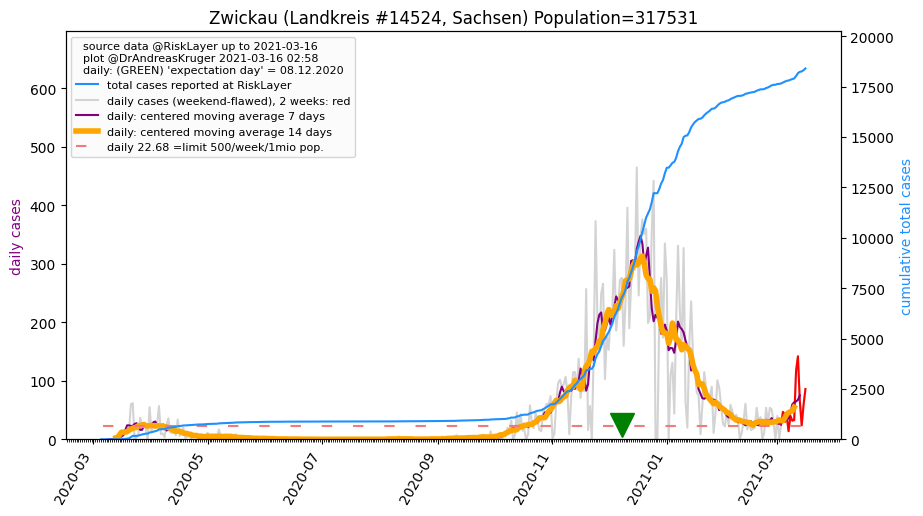
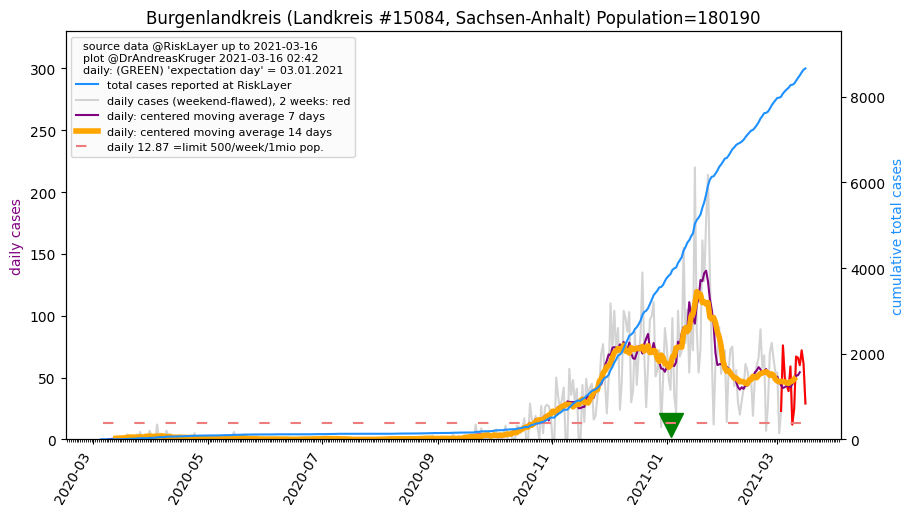
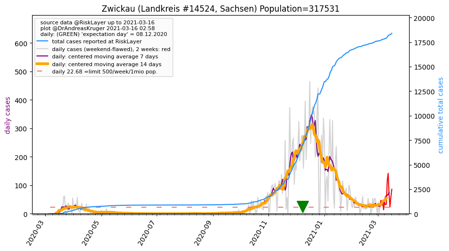
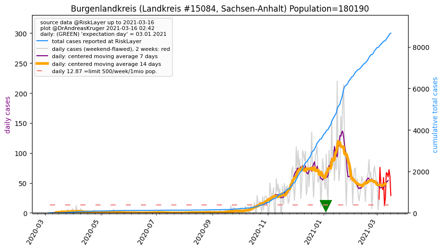

")
")
")
")

")
")
")

| Greiz_LK (0.0 km) |
Gera_KS (16.2 km) |
Saale-Holzland-Kreis_LK (29.7 km) |
| Saale-Orla-Kreis_LK (31.8 km) |
Zwickau_LK (31.9 km)  |
Altenburger Land_LK (32.5 km) |
| Vogtlandkreis_LK (34.4 km) |
Jena_KS (39.5 km) |
Burgenlandkreis_LK (46.3 km)  |
Beware that this is a temporary and experimental page - it might get removed, so please do not link to it. Instead link to project http://tiny.cc/cov19de.